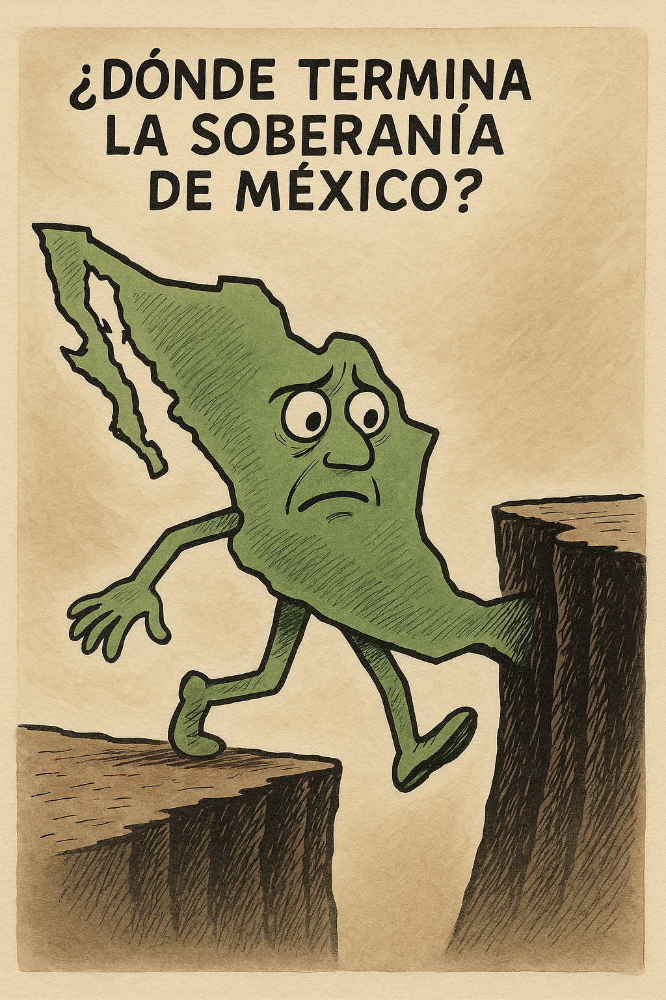

¿Dónde termina la soberanía de México?
En un contexto geopolítico marcado por la presión comercial, la militarización de fronteras y la influencia creciente de potencias extranjeras, México enfrenta una encrucijada crítica: redefinir los límites de su soberanía. Más allá de discursos oficiales, la realidad muestra cómo decisiones en materia energética, seguridad y migración se ven condicionadas por actores externos. La pregunta clave no es si México es soberano, sino hasta qué punto puede ejercer plenamente esa soberanía sin ceder terreno ante intereses foráneos.
En los últimos años, el concepto de soberanía nacional ha sido repetido con insistencia desde todos los frentes: gobiernos, oposiciones, organismos internacionales, medios de comunicación. Sin embargo, la palabra parece alejarse cada vez más de su significado práctico y acercarse al terreno de lo simbólico. ¿Cuánto margen de maniobra tiene hoy México para tomar decisiones plenamente autónomas en asuntos clave como la seguridad, la economía o la migración?
